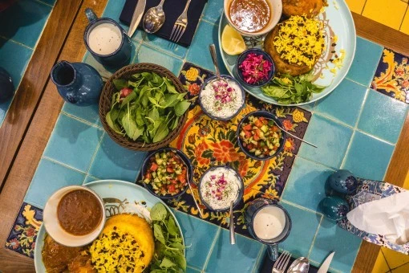
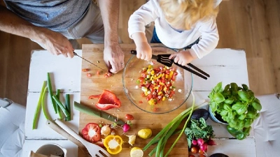

Recipe of the Day

Few Steps Meals focuses on quick, affordable dishes with clear, easy steps. Perfect for busy days, tight budgets, and real life.


See what others in our community are cooking — featured recipes shared by real home cooks.
See Featured RecipesSimple, budget-friendly recipes anyone can make.
Our mission is to make cooking simple, affordable, and fun. Every recipe uses real ingredients, clear steps, and minimal prep — perfect for busy families and real life.
Share your own recipes, tips, and meal ideas with others! Your creativity helps inspire home cooks everywhere.
Share a Recipe